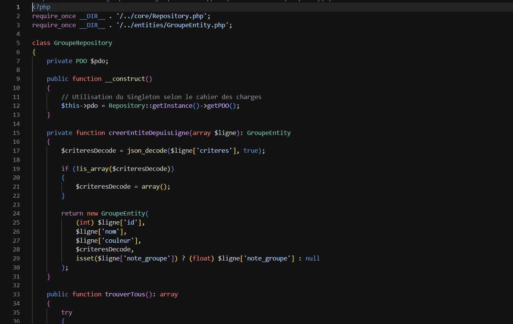
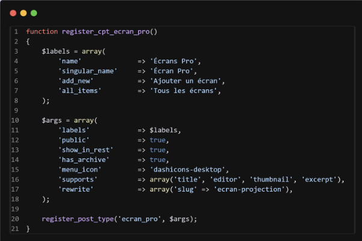

Le langage Back Office
Durant mon BUT Informatique à l'IUT du Havre, l'apprentissage du développement Back Office a principalement été abordé à partir de la deuxième année.
Le langage étudié est le PHP, qui assure la liaison entre l'interface utilisateur (Front Office), le serveur et la base de données.
Mes projets
Voici les réalisations principales dans lesquelles j'ai développé en PHP, aussi bien en projet universitaire qu'en milieu professionnel :
SAE 4.01 : Développement d'une application complexe
Réalisé en équipe de 5 personnes, ce projet visait à concevoir une application de gestion et de filtrage de profils Parcoursup (création de groupes d'étudiants selon des critères précis, tri, extraction de données).
Mon rôle principal :
- Conception de la maquette de l'interface.
- Mise en place du système de filtrage dynamique des profils en PHP/MySQL.

Stage de 2ème année : Développement Web sur WordPress
Pendant mon stage, j'ai développé exclusivement en PHP au sein de l'environnement WordPress. J'ai conçu une grande partie du Back Office du site de l'entreprise Oray, un fabricant français spécialisé dans les écrans de projection pour cinémas, entreprises et particuliers.
Mon rôle principal :
- Développement du système de recherche et de filtrage de produits sur mesure.
- Mise en place de types de contenus et de champs personnalisés (Custom Post Types / ACF) pour structurer le catalogue produit.
le site de Oray n'a pas encore était mis a jour, la version sur la quel j'ai travailler, n'est donc pas celle qu'on trouve en ligne.

Bilan Back Office
Ces expériences m'ont permis de consolider mes bases en PHP, d'apprendre à structurer une logique serveur et à manipuler des bases de données de manière concrète.